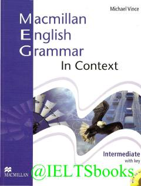

MEIngliz tili grammatikasini kontekst va amaliy mashqlar orqali o'rganish uchun qo'llanma.
Ushbu kitob o'rta va yuqori bosqichdagi o'quvchilar uchun ingliz tili grammatikasini kontekstda o'rgatish va mustahkamlashga mo'ljallangan. Muallif Maykl Vins kundalik hayot va o'quv jarayonida uchraydigan mavzular asosida grammatik qoidalarni tushuntirib beradi. Qo'llanma mustaqil ta'lim oluvchilar va o'qituvchilar uchun amaliy mashqlar va testlarni o'z ichiga oladi.